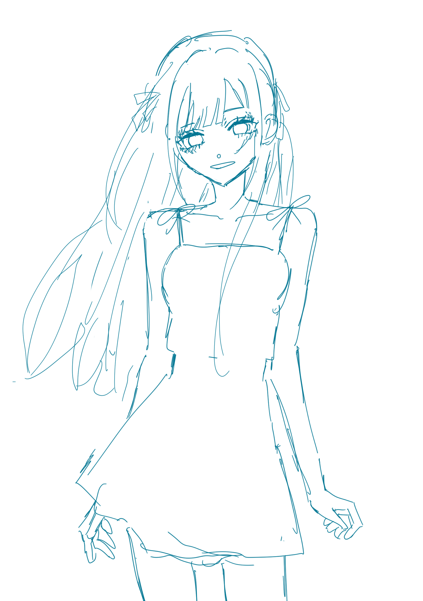
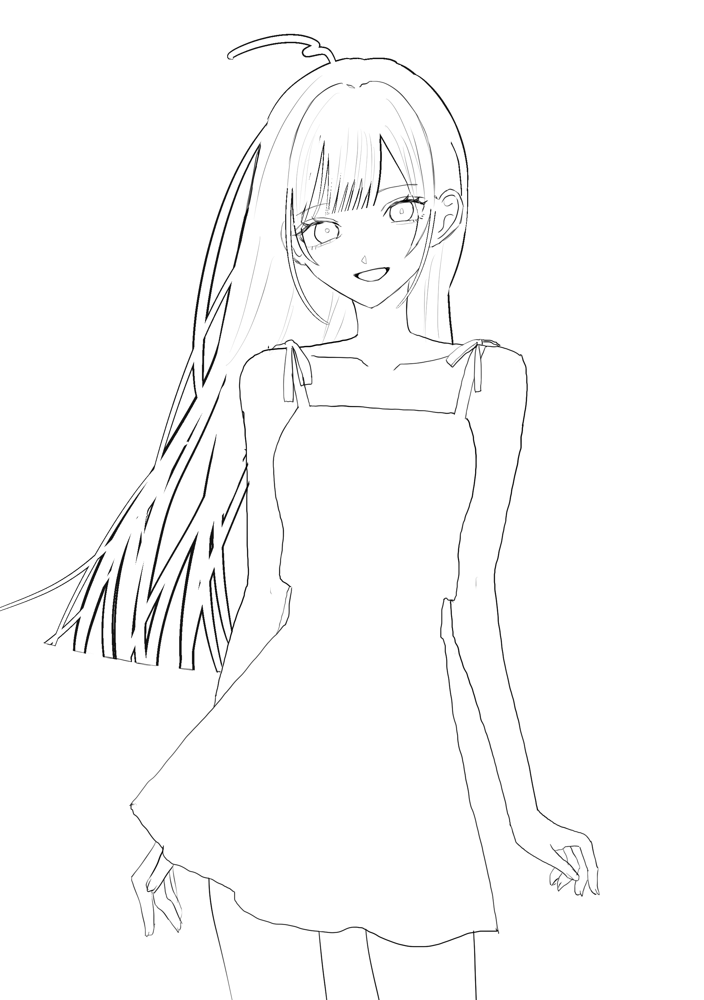
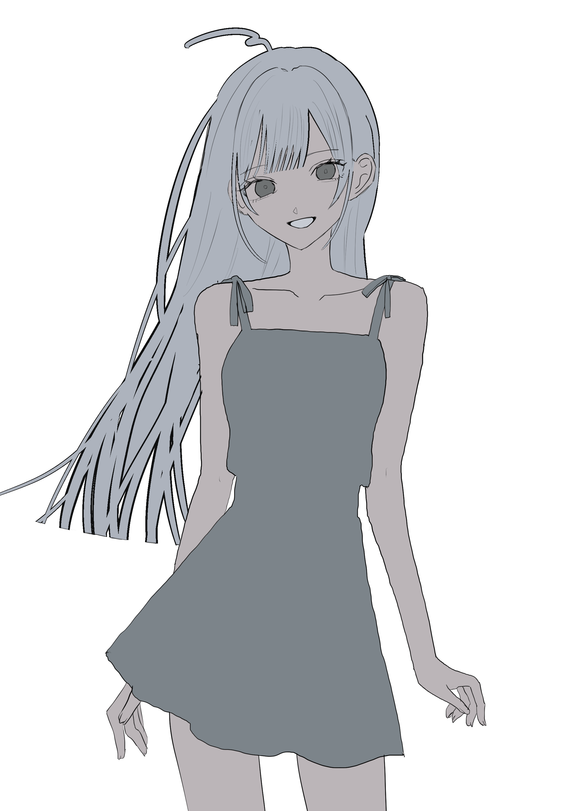
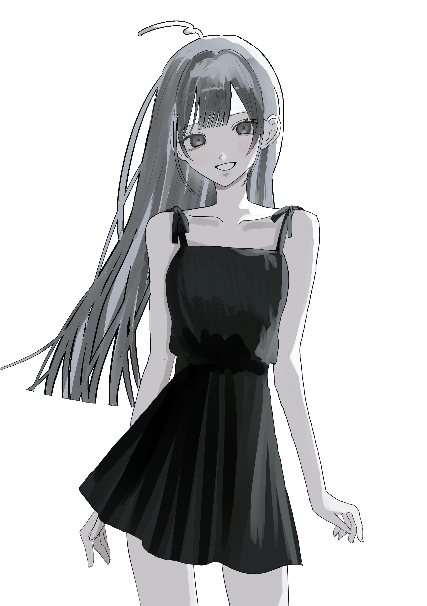
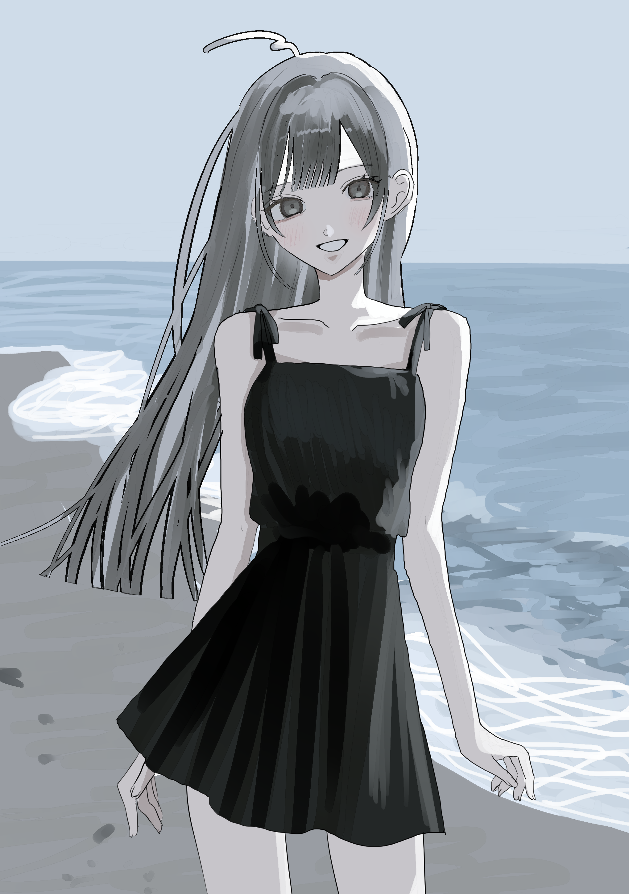
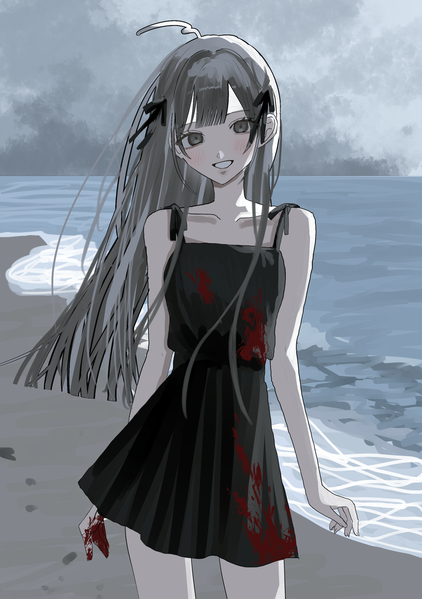

メイキング

「笑っている」
アスハちゃんのイラストメイキングです。
今回は雨の中、海辺で意味深に笑みを浮かべているアスハちゃんのイラストメイキングをご紹介します。
ラフ画

使っているもの
・iPad（第6世代）
・Apple Pencil（第1世代）
・CLIP STUDIO PAINT
まずは勢い重視のラフ。
髪や服の細部はあとからいくらでも直せるので、とにかく雰囲気を固めます。
筆圧の関係ないミリペンで書いていきます。水色を使うことが多いです。
線画

ラフを整えて線画に。
顔のバランスや首の細さ、肩の位置などを調整しました。
この工程で印象がかなり変わりますよね。
ポイントは髪をふちペンで描くことです。これでまとまりが出ます。
下塗り

ベースカラーを置いて全体の配色を確認。
この時点では影はほとんど付けず、シルエットが成立しているかを見ています。
最近は肌を浅黒く塗るのにハマっています。
色塗り

光と影を入れて立体感を追加。
黒いワンピースだったので、真っ黒ではなくグレーも混ぜながら質感を出しました。
下塗りでは肌を浅黒く塗りましたが透明感のある肌色に変更します。
背景

最初は静かな海にしました。
背景は苦手なので苦戦しました。
色調整・加工

ここから物語を足していきます。
トーンカーブで色味を調整。
血痕を入れ、空を曇らせました。
キャラクター自体は笑っているのに、周囲だけが不穏になっていく。
『ASH JOURNEY』らしい空気感を意識しています。
加工
最後に雨を降らせました。
物語性が深まるかと思います。
おわりに
イラストは「塗り」だけではなく、最後の演出まで含めて完成だと思っています。
ラフから完成までを振り返ると、自分でも「こんなに変わるんだ」と驚くことがあります。
また機会があれば、別のイラストでも制作過程を紹介してみたいです。